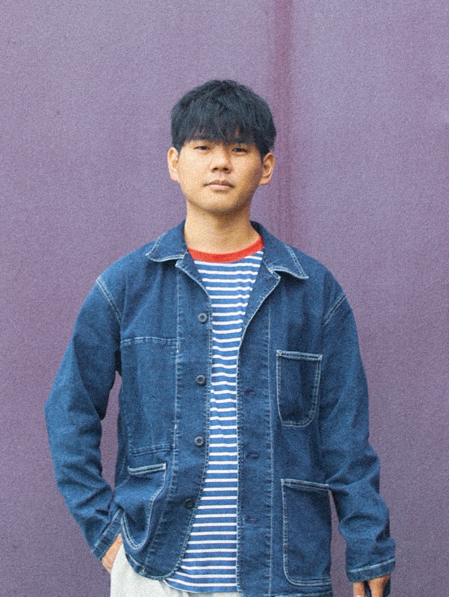

片山 晋 / Shin Katayama
 1994年埼玉県生まれ. 2018年3月慶應義塾大学環境情報学部卒業. 2020年3月慶應義塾大学大学院政策・メディア研究科修士課程修了. 修士課程在学中に博士課程教育リーディングプログラムに参加. Nokia Bell Labs, CambridgeでVisiting Researcherを経験. 2020年4月より名古屋大学大学院工学研究科情報・通信工学後期博士課程に所属. アークレブ・アカデミア・ストラテジスト・ネットワーク（AASN）アカデミア・ストラテジスト. 専門はアフェクティブコンピューティング, ヒューマンコンピュータインタラクション.